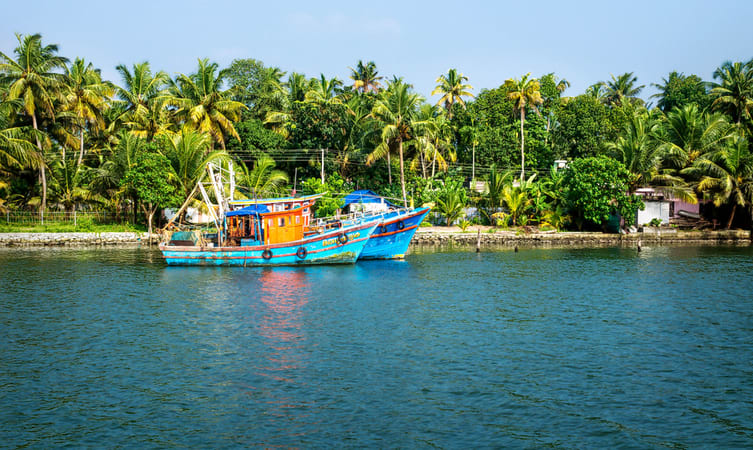
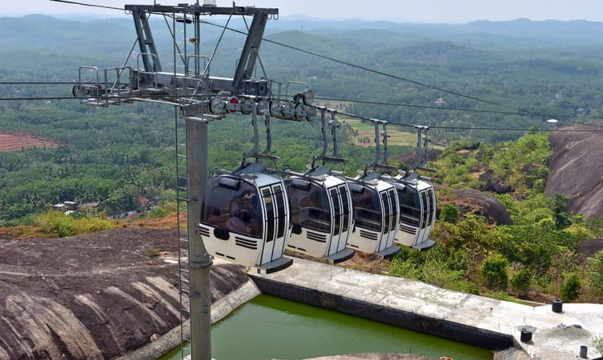

01.Ashtamudi Lake

The incredible beauty of Kerala, Ashtamudi lake has eight branches that coincide with the Arabian sea after converging into one channel, hence the name Ashtamudi, where Ashta means eight and mudi means branch.
Spell-binding the travelers with its inarticulate and persuasive charm, this second largest lake in Kerala is one of the most popular places to visit in Kollam. Beautifying the banks of this lake, palm and coconut trees, intensifies the fascinating experience of calm and lush green waterways.
Thriving harmoniously in Kollam district of Kerala, Ashtamudi lake immerses the tourists with tremendous pleasure by granting them an experience of houseboat cruising.
Things to do: Backwater Cruising, Fishing, Experience unimaginable stay in a houseboat, Island visit.
Location: Kollam, district of Kerala>
Price:Coasting by houseboat will start from INR 2500.
Timings: Welcome travelers 24 hours preferred timing by travelers from 10:00 am to 6:00 pm.
Best time to visit:To enjoy most of it, visit between November to March for cool and pleasant weather.
02.Kollam Beach

The beauty of Kollam beach makes it a vantage point to unwind and relish its picturesque landscape. The mysterious view of natural blue waters blending with the infinite bright sky bequeaths the sightseers amazed. The Kollam beach calls to rejuvenate the mind and body, energising the tourists with its cultural and spiritual aura.
This beach is famous among some travelers with the name of Mahatma Gandhi Beach and soothes wanderers with lush green, calm backwaters, and endless water activities.
Things to do: Beach fun activities, Swimming, visit nearby Mahatma Gandhi Park.
Located:Kollam, district of Kerala
Timings:10:00 am to 5:00 pm.
Entry fee:None.
Best time to visit: The most pleasant time to visit is from October to February.
03.Kollam Adventure Park

The center of leisure activities for people with no age limit. A must-go-to place for luxurious boating, picnic, and the art museum among other tourist places in Kollam.
The park encloses a place possessing numerous rides and impressive scenery that makes it ideal for a family picnic. With the alluring backwaters, travelers can enjoy houseboat cruises, deluxe boats, and speedboats in the midst of serene waters. Apart from the boat club, children’s park, this place covers enticements such as a 200-year-old government guest house and Yatri Nivas.
Also, on the establishment is the art museum, where painting lovers seizes a chance to admire exhibit paintings collected from different parts of the country. And the fun doesn’t end here, a nature dweller can visit the mangroves close to the park to spot endangered species of bushes.
Location: Behind guest house, Asramam, Kollam
Timings:10:00 am to 6:00 pm.
Things to do: Boating, Art Museum, yatri Nivas, and vintage guest house, fun activities and rides at the park.
Best time to visit: The playful time is from October to March.
Price:INR 30.